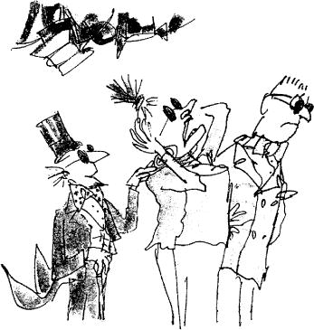
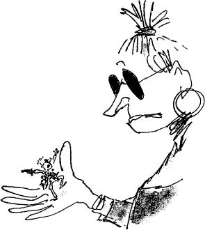

Mike Teavee was even more excited than Grandpa Joe at seeing a bar of chocolate being sent by television. ‘But Mr Wonka,’ he shouted, ‘can you send other things through the air in the same way? Breakfast cereal, for instance?’
‘Oh, my sainted aunt!’ cried Mr Wonka. ‘Don’t mention that disgusting stuff in front of me! Do you know what breakfast cereal is made of? It’s made of all those little curly wooden shavings you find in pencil sharpeners!’
‘But could you send it by television if you wanted to, as you do chocolate?’ asked Mike Teavee.
‘Of course I could!’
‘And what about people?’ asked Mike Teavee. ‘Could you send a real live person from one place to another in the same way?’
‘A person!’ cried Mr Wonka. ‘Are you off your rocker?’
‘But could it be done?’
‘Good heavens, child, I really don’t know… I suppose it could… yes. I’m pretty sure it could… of course it could… I wouldn’t like to risk it, though… it might have some very nasty results…’
But Mike Teavee was already off and running. The moment he heard Mr Wonka saying, ‘I’m pretty sure it could… of course it could,’ he turned away and started running as fast as he could towards the other end of the room where the great camera was standing. ‘Look at me!’ he shouted as he ran. ‘I’m going to be the first person in the world to be sent by television!’
‘No, no, no, no!’ cried Mr Wonka.
‘Mike!’ screamed Mrs Teavee. ‘Stop! Come back! You’ll be turned into a million tiny pieces!’
But there was no stopping Mike Teavee now. The crazy boy rushed on, and when he reached the enormous camera, he jumped straight for the switch, scattering Oompa-Loompas right and left as he went.
‘See you later, alligator!’ he shouted, and he pulled down the switch, and as he did so, he leaped out into the full glare of the mighty lens.
There was a blinding flash.
Then there was silence.
Then Mrs Teavee ran forward… but she stopped dead in the middle of the room… and she stood there… she stood staring at the place where her son had been… and her great red mouth opened wide and she screamed, ‘He’s gone! He’s gone!’
‘Great heavens, he has gone!’ shouted Mr Teavee.
Mr Wonka hurried forward and placed a hand gently on Mrs Teavee’s shoulder. ‘We shall have to hope for the best,’ he said. ‘We must pray that your little boy will come out unharmed at the other end.’
‘Mike!’ screamed Mrs Teavee, clasping her head in her hands. ‘Where are you?’
‘I’ll tell you where he is,’ said Mr Teavee, ‘he’s whizzing around above our heads in a million tiny pieces!’
‘Don’t talk about it!’ wailed Mrs Teavee.
‘We must watch the television set,’ said Mr Wonka. ‘He may come through any moment.’
Mr and Mrs Teavee and Grandpa Joe and little Charlie and Mr Wonka all gathered round the television and stared tensely at the screen. The screen was quite blank.
‘He’s taking a heck of a long time to come across,’ said Mr Teavee, wiping his brow.
‘Oh dear, oh dear,’ said Mr Wonka, ‘I do hope that no part of him gets left behind.’
‘What on earth do you mean?’ asked Mr Teavee sharply.
‘I don’t wish to alarm you,’ said Mr Wonka, ‘but it does sometimes happen that only about half the little pieces find their way into the television set. It happened last week. I don’t know why, but the result was that only half a bar of chocolate came through.’
Mrs Teavee let out a scream of horror. ‘You mean only a half of Mike is coming back to us?’ she cried.
‘Let’s hope it’s the top half,’ said Mr Teavee.
‘Hold everything!’ said Mr Wonka. ‘Watch the screen! Something’s happening!’
The screen had suddenly begun to flicker.
Then some wavy lines appeared.
Mr Wonka adjusted one of the knobs and the wavy lines went away.
And now, very slowly, the screen began to get brighter and brighter.
‘Here he comes!’ yelled Mr Wonka. ‘Yes, that’s him all right!’
‘Is he all in one piece?’ cried Mrs Teavee.
‘I’m not sure,’ said Mr Wonka. ‘It’s too early to tell.’
Faintly at first, but becoming clearer and clearer every second, the picture of Mike Teavee appeared on the screen. He was standing up and waving at the audience and grinning from ear to ear.
‘But he’s a midget!’ shouted Mr Teavee.
‘Mike,’ cried Mrs Teavee, ‘are you all right? Are there any bits of you missing?’
‘Isn’t he going to get any bigger?’ shouted Mr Teavee.
‘Talk to me, Mike!’ cried Mrs Teavee. ‘Say something! Tell me you’re all right!’
A tiny little voice, no louder than the squeaking of a mouse, came out of the television set. ‘Hi, Mum!’ it said. ‘Hi, Pop! Look at me! I’m the first person ever to be sent by television!’
‘Grab him!’ ordered Mr Wonka. ‘Quick!’
Mrs Teavee shot out a hand and picked the tiny figure of Mike Teavee out of the screen.
‘Hooray!’ cried Mr Wonka. ‘He’s all in one piece! He’s completely unharmed!’
‘You call that unharmed?’ snapped Mrs Teavee, peering at the little speck of a boy who was now running to and fro across the palm of her hand, waving his pistols in the air.
He was certainly not more than an inch tall.
‘He’s shrunk!’ said Mr Teavee.
‘Of course he’s shrunk,’ said Mr Wonka. ‘What did you expect?’
‘This is terrible!’ wailed Mrs Teavee. ‘What are we going to do?’
And Mr Teavee said, ‘We can’t send him back to school like this! He’ll get trodden on! He’ll get squashed!’
‘He won’t be able to do anything!’ cried Mrs Teavee.
‘Oh, yes I will!’ squeaked the tiny voice of Mike Teavee. ‘I’ll still be able to watch television!’
‘Never again!’ shouted Mr Teavee. ‘I’m throwing the television set right out the window the moment we get home. I’ve had enough of television!’
When he heard this, Mike Teavee flew into a terrible tantrum. He started jumping up and down on the palm of his mother’s hand, screaming and yelling and trying to bite her fingers. ‘I want to watch television!’ he squeaked. ‘I want to watch television! I want to watch television! I want to watch television!’
‘Here! Give him to me!’ said Mr Teavee, and he took the tiny boy and shoved him into the breast pocket of his jacket and stuffed a handkerchief on top. Squeals and yells came from inside the pocket, and the pocket shook as the furious little prisoner fought to get out.
‘Oh, Mr Wonka,’ wailed Mrs Teavee, ‘how can we make him grow?’
‘Well,’ said Mr Wonka, stroking his beard and gazing thoughtfully at the ceiling, T must say that’s a wee bit tricky. But small boys are extremely springy and elastic. They stretch like mad. So what we’ll do, we’ll put him in a special machine I have for testing the stretchiness of chewing-gum! Maybe that will bring him back to what he was.’
‘Oh, thank you!’ said Mrs Teavee.
‘Don’t mention it, dear lady.’
‘How far d’you think he’ll stretch?’ asked Mr Teavee.
‘Maybe miles,’ said Mr Wonka. ‘Who knows? But he’s going to be awfully thin. Everything gets thinner when you stretch it.’
‘You mean like chewing-gum?’ asked Mr Teavee.
‘Exactly.’
‘How thin will he be?’ asked Mrs Teavee anxiously.
‘I haven’t the foggiest idea,’ said Mr Wonka. ‘And it doesn’t really matter, anyway, because we’ll soon fatten him up again. All we’ll have to do is give him a triple overdose of my wonderful Supervitamin Chocolate. Supervitamin Chocolate contains huge amounts of vitamin A and vitamin B. It also contains vitamin C, vitamin D, vitamin E, vitamin F, vitamin G, vitamin I, vitamin J, vitamin K, vitamin L, vitamin M, vitamin N, vitamin O, vitamin P, vitamin Q, vitamin R, vitamin T, vitamin U, vitamin V, vitamin W, vitamin X, vitamin Y, and, believe it or not, vitamin Z! The only two vitamins it doesn’t have in it are vitamin S, because it makes you sick, and vitamin H, because it makes you grow horns on the top of your head, like a bull. But it does have in it a very small amount of the rarest and most magical vitamin of them all – vitamin Wonka.’
‘And what will that do to him?’ asked Mr Teavee anxiously.
‘It’ll make his toes grow out until they’re as long as his fingers…’
‘Oh, no!’ cried Mrs Teavee.
‘Don’t be silly,’ said Mr Wonka. ‘It’s most useful. He’ll be able to play the piano with his feet.’
‘But Mr Wonka…’
‘No arguments, please!’ said Mr Wonka. He turned away and clicked his fingers three times in the air. An Oompa-Loompa appeared immediately and stood beside him. ‘Follow these orders,’ said
Mr Wonka, handing the Oompa-Loompa a piece of paper on which he had written full instructions. ‘And you’ll find the boy in his father’s pocket. Off you go! Good-bye, Mr Teavee! Good-bye, Mrs Teavee! And please don’t look so worried! They all come out in the wash, you know; every one of them…’
At the end of the room, the Oompa-Loompas around the giant camera were already beating their tiny drums and beginning to jog up and down to the rhythm.
‘There they go again!’ said Mr Wonka. ‘I’m afraid you can’t stop them singing.’
Little Charlie caught Grandpa Joe’s hand, and the two of them stood beside Mr Wonka in the middle of the long bright room, listening to the Oompa-Loompas. And this is what they sang:
‘The most important thing we’ve learned,
So far as children are concerned,
Is never, NEVER, NEVER let
Them near your television set –
Or better still, just don’t install
The idiotic thing at all.
In almost every house we’ve been,
We’ve watched them gaping at the screen.
They loll and slop and lounge about,
And stare until their eyes pop out.
(Last week in someone’s place we saw
A dozen eyeballs on the floor.)
They sit and stare and stare and sit
Until they’re hypnotized by it,
Until they’re absolutely drunk
With all that shocking ghastly junk.
Oh yes, we know it keeps them still,
They don’t climb out the window sill,
They never fight or kick or punch,
They leave you free to cook the lunch
And wash the dishes in the sink –
But did you ever stop to think,
To wonder just exactly what
This does to your beloved tot?
IT ROTS THE SENSES IN THE HEAD!
IT KILLS IMAGINA TION DEAD!
IT CLOGS AND CLUTTERS UP THE MIND!
IT MAKES A CHILD SO DULL AND BLIND
HE CAN NO LONGER UNDERSTAND
A FANTASY, A FAIRYLAND!
HIS BRAIN BECOMES AS SOFT AS CHEESE!
HIS POWERS OF THINKING RUST AND FREEZE!
HE CAN NO T THINK – HE ONLY SEES!
“All right!” you’ll cry. “All right!” you’ll say,
“But if we take the set away,
What shall we do to entertain
Our darling children! Please explain!”
We’ll answer this by asking you,
“What used the darling ones to do?
How used they keep themselves contented
Before this monster was invented?”
Have you for gotten? Don’t you know?
We’ll say it very loud and slow:
THEY… USED… TO… READ! They’d
READ and READ,
AND READ and READ, and then proceed
TO READ some more. Great Scott! Gadzooks!
One half their lives was reading books!
The nursery shelves held books galore!
Books cluttered up the nursery floor!
And in the bedroom, by the bed,
More books were waiting to be read!
Such wondrous, fine, fantastic tales
Of dragons, gypsies, queens, and whales
And treasure isles, and distant shores
Where smugglers rowed with muffled oars,
And pirates wearing purple pants,
And sailing ships and elephants,
And cannibals crouching round the pot,
Stirring away at something hot.
(It smells so good, what can it be?
Good gracious, it’s Penelope.)
The younger ones had Beatrix Potter
With Mr Tod, the dirty rotter,
And Squirrel JVutkin, Pigling Bland,
And Mrs Tiggy-Winkle and –
Just How The Camel Got His Hump,
And How The Monkey Lost His Rump,
And Mr Toad, and bless my soul,
There’s Mr Rat and Mr Mole –
Oh, books, what books they used to know,
Those children living long ago!
So please, oh please, we beg, we pray,
Go throw your TV set away,
And in its place you can install
A lovely bookshelf on the wall.
Then fill the shelves with lots of books,
Ignoring all the dirty looks,
The screams and yells, the bites and kicks,
And children hitting you with sticks –
Fear not, because we promise you
That, in about a week or two
Of having nothing else to do,
They’ll now begin to feel the need
Of having something good to read.
And once they start – oh boy, oh boy!
You watch the slowly growing joy
That fills their hearts. They’ll grow so keen
They’ll wonder what they’d ever seen
In that ridiculous machine,
That nauseating, foul, unclean.
Repulsive television screen!
And later, each and every kid
Will love you more for what you did.
P.S. Regarding Mike Teavee,
We very much regret that we
Shall simply have to wait and see
If we can get him back his height.
But if we can’t – it serves him right.’